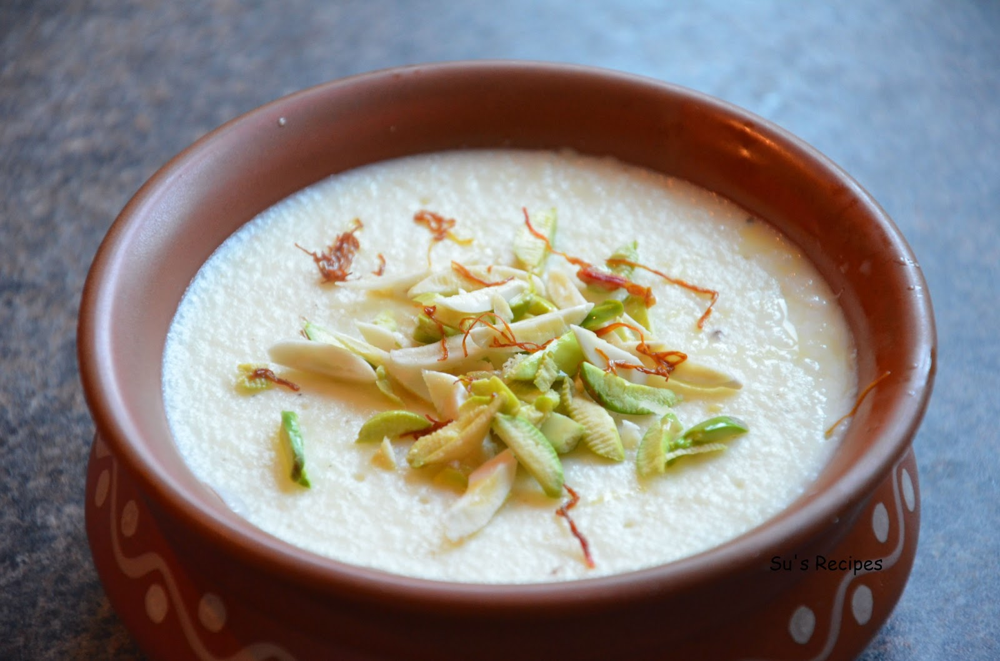

Firni

Description
Phirni is a thick and creamy pudding made from ground rice.
To make the simplest and yet the best phirni recipe all you need is rice,
milk, sugar, nuts and flavorings of your choice like saffron or cardamom powder or rose water.
- 2 tbsp basmati rice
- water for soaking
- 1 litre milk (full cream)
- 1/4cup sugar
- 1/4 tsp cardamom powder
- 2 tbsp saffron milk
- few dry fruits (chopped)
- firstly, soak 2 tbsp of basmati rice for 30 minutes.
- discard the water and blend rice to coarse paste. keep aside.
- now in a large pot boil 1 litre milk.
- stir occasionally, and simmer for 10 minutes.
- keep the flame on low or till milk thickens.
- now add in prepared coarse rice paste.
- stir continuously for 5 minutes. else, lumps might form
- simmer for another 5 minutes stirring in between.
- boil the milk till the rice gets cooked completely.
- further add ¼ cup of sugar and 2 tbsp saffron milk.
- mix well till the milk thickens and turn creamy.
- add in cardamom powder and mix well.
- finally, serve chilled phirni garnished with few chopped nuts.